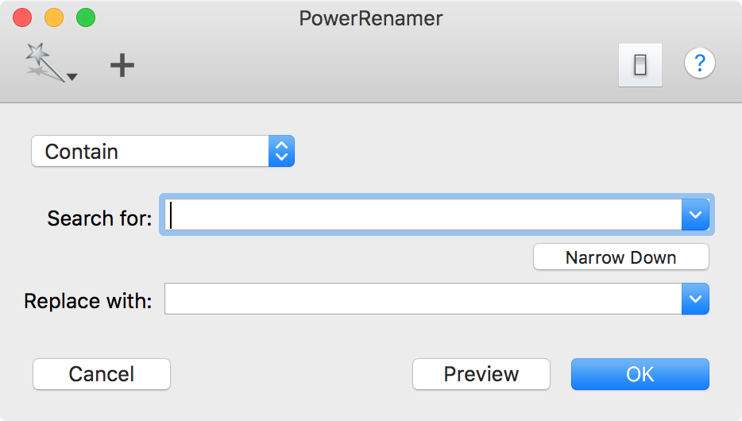
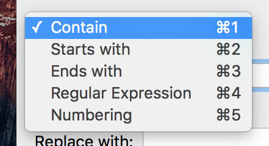

PowerRenamer changes names of selected files in Finder. Therefor it is recommended that launching from a certain launcher utility (e.g., Dock, Script Menu and so on) after selecting items in Finder.
The following window will appear.

In this window, your can set searching string in file names, search condition and replacing string.
You can choose search condition from the popup menu. 
Pressing OK button cause applying the rename setting to the selection in Finder.
You can change selected items in Finder anytime before pressing OK button.